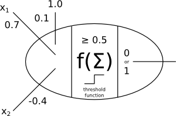
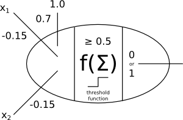

Final guide
Answers on the bottom. Also, you can bring a notecard (5in x 7in max) with notes or whatnot.
Multi-agent systems
What are two principles for designing agent-based simulations?
Ant intelligence
Which of the following features are in the “ant brood sorting” model?
- Scent-following
- Random walks
- Always pick up an object if ant finds one
- Decide stochastically to drop an object if holding one
- Drop the object only when encountering another object (if holding an object)
- Communicate directly with other ants
(The question on the Final will ask about ant transport that you read for Homework 6.)
Why is it important that the chemical ants leave behind when they are carrying food slowly evaporates?
Prisoner’s dilemma
True or false? “Defecting” means confessing to the crime so that you get off the hook but your partner goes to jail.
Describe the “Jesus” strategy.
Describe the “Lucifer” strategy.
Describe the “Unforgiving” strategy.
Describe the “Tit-for-tat” a.k.a. “Moses” strategy. What is the first choice in this strategy? What are all future choices?
Which of these three strategies generally performed best across random scenarios in the iterated prisoner’s dilemma?
If two “Tit-for-tat” strategies face each other in the iterated prisoner’s dilemma, we will see behavior equivalent to which non-Tit-for-tat strategy or strategies facing each other?
Learning
Describe the difference between “supervised” and “unsupervised” learning.
What does “10-fold cross validation” mean?
k-means clustering
k-means clustering is an unsupervised or supervised learning strategy?
What does the choice of \(k\) represent?
How does the choice of initial clusters affect the outcome?
k-nearest neighbor
What does k-nearest neighbor allow us to do with a new, unknown data point?
k-nearest neighbor is an unsupervised or supervised learning strategy?
What does the choice of \(k\) represent?
What problem may a very small value of \(k\) cause?
What problem may a very large value of \(k\) cause?
Is there one value for \(k\) that works best for nearly all data sets? If so, what is it?
Give one benefit of k-nearest neighbor learning.
Give one drawback of k-nearest neighbor learning.
Document classification
What is the goal of document classification?
Define true positive (TP). Define false positive (FP). Define false negative (FN). Define precision (in terms of TP and/or FP and/or FN). Define recall (in terms of TP and/or FP and/or FN). Define F-score (in terms of precision and/or recall).
Suppose we make our classification engine more cautious; that is, it is less likely overall to predict any category. Does precision go up or down or remain unchanged? Does recall go up or down or remain unchanged?
Give a possible result of stemming each of the following words: “linguistic,” “dog,” “jumping,” “philosophy.”
Describe a “binary feature vector” for a text document.
Calculate the tf-idf scores for a set of documents (as in Homework 8).
Why do you suppose tf-idf feature vectors perform better (in terms of F-score) than, say, frequency count feature vectors?
A common word (most documents have many occurrences of this word) would have a high or low tf-idf score?
Given doc A as \(<0, 3, 1, 0, 5>\), is doc X \(<0, 3, 0, 2, 3>\) or doc Y \(<1, 4, 0, 0, 5>\) closer to doc A in terms of “cosine similarity”?
Probability and Bayesian methods
Describe what \(P(A)\) means (in words).
Describe what \(P(A,B)\) means (in words).
Describe what \(P(A|B)\) means (in words).
If events \(A\) and \(B\) are independent, and \(P(A) = 0.25\), \(P(B) = 0.10\), what is \(P(A,B)\)? What is \(P(B,A)\)?
In the toothache graph from the Bayesian inference notes (the graph with just c, g, and t), what is \(P(t|g)\)?
Write Bayes’ theorem.
Suppose I know that \(P(B|A)=0.1, P(A)=0.9, P(B)=0.25\), what is \(P(A|B)\)?
In the toothache graph from the Bayesian inference notes (the graph with just c, g, and t), is \(P(g|t) > P(c|t)\)?
What is the outcome of computing \(\arg\max X (P(x))\) where \(X\) is an event? (If \(\arg\max X (P(X))\) was a function, what would the output of the function be?) Describe in English.
Suppose I know that \(P(B|A)=0.1, P(A)=0.9, P(B|C)=0.2, P(C)=0.8\), what is \(\arg\max X (P(X|B))\)?
Give one benefit of naïve Bayesian classification (as compared to other classification methods like k-nearest neighbor).
Give one drawback of naïve Bayesian classification (as compared to other classification methods like support vector machines).
Neural networks
What does “all or nothing” mean when we talk about neurons in the brain?
Generate the input/output table for this perceptron:

Draw perceptron and define inputs for the NAND function.
Define the word “epoch.”
Write the perceptron learning rule for a single weight. Define the variables you use.
True or false: a single-layer perceptron network can compute any function.
Philosophy
The “Chinese room” argument
What is the essential goal of “strong AI?”
What is the most critical assumption in the Chinese room argument?
If you believe the Chinese room argument, can you also (reasonably) believe that passing the Turing test gives proof that a machine possesses a mind (i.e., can be said to truly understand things)?
The “Norvig - Chomsky” debate
Give a 2-3 sentence summary of the debate.
Robot ethics
Give two ethical issues related to the “take your medicine robot.”
Answers
Multi-agent systems
What are two principles for designing agent-based simulations?
Here are seven:
- agents not functions (not functional decomposition)
- keep agents small in size
- keep agents small in time (forgetful)
- keep agents small in scope (local sensing and action)
- decentralizd system control
- support agent diversity
- provide an entropy leak
Ant intelligence
- No: Scent-following
- Yes: Random walks
- No: Always pick up an object if ant finds one
- Yes: Decide stochastically to drop an object if holding one
- No: Drop the object only when encountering another object (if holding an object) — (every time step, regardless of whether another object is encountered, determine whether to drop the object if holding one)
- No: Communicate directly with other ants
Why is it important that the chemical ants leave behind when they are carrying food slowly evaporates?
The chemical must evaporate so that the ants do not continue trying to walk to a food source that no longer exists. The ants need to “forget” (one of the principles of agent design).
Prisoner’s dilemma
True or false? “Defecting” means confessing to the crime so that you get off the hook but your partner goes to jail. True
Describe the “Jesus” strategy. Always cooperate
Describe the “Lucifer” strategy. Always defect
Describe the “Unforgiving” strategy. Cooperate until the partner defects, and then defect forever after.
Describe the “Tit-for-tat” a.k.a. “Moses” strategy. What is the first choice in this strategy? Tit-for-tat does the same action the partner did in the last time step; it just mirrors the partner. The first choice (if tit-for-tat goes first) is to cooperate.
Which of these three strategies generally performed best across random scenarios in the iterated prisoner’s dilemma? Tit-for-tat
If two “Tit-for-tat” strategies face each other in the iterated prisoner’s dilemma, we will see behavior equivalent to which non-Tit-for-tat strategy or strategies facing each other? Jesus strategies
Learning
Describe the difference between “supervised” and “unsupervised” learning.
Supervised learning uses information about the truth when training. Unsupervised learning does not have the truth (ever) so obviously cannot use this information.
What does “10-fold cross validation” mean?
This happens 10 times, and the results are averaged: Take 90% of the input data and train the learning algorithm on it; test the learning algorithm on the remaining 10%. For each of the 10 iterations, separate the input data into a different 90/10 split.
k-means clustering
k-means clustering is an unsupervised or supervised learning strategy? Unsupervised
What does the choice of \(k\) represent? The number of clusters.
How does the choice of initial clusters affect the outcome? The resulting clusters may be different. Initial clusters near outliers may result in small clusters around the outliers (which is usually a bad thing).
k-nearest neighbor
What does k-nearest neighbor allow us to do with a new, unknown data point? Determine its category (class, label, tag, etc.).
k-nearest neighbor is an unsupervised or supervised learning strategy? Supervised
What does the choice of \(k\) represent? The number of neighbors that get a “vote” during the classification stage.
What problem may a very small value of \(k\) cause? Noise has too great an impact. The nearest neighbor will be chosen without considering the “larger” picture.
What problem may a very large value of \(k\) cause? The more common category will be chosen more often than it should.
Is there one value for \(k\) that works best for nearly all data sets? If so, what is it? There is not one best value; you need to experiment with different values to find the best for your dataset.
Give one benefit of k-nearest neighbor learning. It is a very simple algorithm and can work quite well in some cases.
Give one drawback of k-nearest neighbor learning. It is very slow because it checks every item in the database (unless KD-trees are used). It also requires one to retain all the training examples in the database.
Document classification
What is the goal of document classification? Determine the category (class) or categories for a new document.
Define true positive (TP). Define false positive (FP). Define false negative (FN). Define precision (in terms of TP and/or FP and/or FN). Define recall (in terms of TP and/or FP and/or FN). Define F-score (in terms of precision and/or recall).
True positive (tp): chosen categories that are true categories.
False positive (fp): chosen categories that are not true categories.
False negatives (fn): true categories that are not chosen.
Precision: \(tp/(tp+fp)\).
Recall: \(tp/(tp+fn)\).
F-score: \(2 * precision * recall / (precision + recall)\).
Suppose we make our classification engine more cautious; that is, it is less likely overall to predict any category. Does precision go up or down or remain unchanged? Does recall go up or down or remain unchanged? Precision goes up because there are fewer \(fp\). Recall goes down because there are more \(fn\).
Give a possible result of stemming each of the following words: “linguistic,” “dog,” “jumping,” “philosophy.” Maybe: “linguist” “dog” “jump” “philos”. “Dog” won’t be stemmed, for example.
Describe a “binary feature vector” for a text document. Each unique word is a “dimension,” and the value for that dimension is 1 or 0. It is 1 if the word is present in the document, 0 otherwise.
Calculate the tf-idf scores for a set of documents (as in Homework 8). *See an example in the ./doc-vectors.xls file.*
Why do you suppose tf-idf feature vectors perform better (in terms of F-score) than, say, frequency count feature vectors? The “contribution” of each word is considered rather than its count. This matters because some common words, like “the,” don’t contribute any information about the document’s category. We can detect the contribution of a word by considering how many other docs have the same word.
A common word (most documents have many occurrences of this word) would have a high or low tf-idf score? A low tf-idf score.
Given doc A as \(<0, 3, 1, 0, 5>\), is doc X \(<0, 3, 0, 2, 3>\) or doc Y \(<1, 4, 0, 0, 5>\) closer to doc A in terms of “cosine similarity”?
doc A has magnitude 5.916, doc X has magnitude 4.69, doc Y has magnitude 6.48; doc A dot-product doc X is 24, doc A dot-product doc Y is 37; cosine similarity of doc A and doc X is 0.865, cosine similarity of doc A with doc Y is 0.965. So doc Y is closer.
Probability and Bayesian methods
Describe what \(P(A)\) means (in words). The probability that some event \(A\) occurs.
Describe what \(P(A,B)\) means (in words). The probability that two events \(A\) and \(B\) occur together.
Describe what \(P(A|B)\) means (in words). The probability that some event \(A\) occurs given that we know or are assuming event \(B\) also occurs.
If events \(A\) and \(B\) are independent, and \(P(A) = 0.25\), \(P(B) = 0.10\), what is \(P(A,B)\)? $0.25 * 0.10 = 0.025$ What is \(P(B,A)\)? Same.
In the toothache graph from the Bayesian inference notes (the graph with just c, g, and t), what is \(P(t|g)\)?
$$P(t|g) = P(t|g,c)P(c) + P(t|g,\neg c)P(\neg c) = 1.0*0.10 + 0.3*0.9 = 0.37$$Write Bayes’ theorem. \(P(B|A) = P(A|B)P(B)/P(A)\) or equivalently \(P(A|B) = P(B|A)P(A)/P(B)\).
Suppose I know that \(P(B|A)=0.1, P(A)=0.9, P(B)=0.25\), what is \(P(A|B)\)? \(P(A|B)=0.1*0.9/0.25=0.36\).
In the toothache graph from the Bayesian inference notes (the graph with just c, g, and t), is \(P(g|t) > P(c|t)\)?
\begin{eqnarray} P(g|t) = P(t|g)P(g)/P(t) &=& (P(t|g,c)P(c) + P(t|g,\neg c)P(\neg c))P(g)/P(t) \\ &=& (1.0*0.10 + 0.3*0.9)*0.05/P(t)\\ &=& 0.0185/P(t) \\ P(c|t) = P(t|c)P(c)/P(t) &=& (P(t|c,g)P(g) + P(t|c,\neg g)P(\neg g))P(c)/P(t) \\ &=& (1.0*0.05 + 0.6*0.95)*0.10/P(t) \\ &=& 0.062/P(t) \end{eqnarray}So \(P(c|t) > P(g|t)\).
What is the outcome of computing \(\arg\max X (P(X))\) where \(X\) is an event? (If \(\arg\max X (P(x))\) was a function, what would the output of the function be?) Describe in English. The outcome would be an event, not a probability.
Suppose I know that \(P(B|A)=0.1, P(A)=0.9, P(B|C)=0.2, P(C)=0.8\), what is \(\arg\max X (P(X|B))\)? The answer is \(C\) because \(P(B|A)P(A) < P(B|C)P(C)\).
As described in the naïve Bayesian classification notes, what does \(d_i\) represent for some word \(i\)? \(d_i\) is the number of documents (in the whole database) that contain at least one occurrence of word \(i\). What does \(d_{ci}\) represent for some word \(i\) and category \(c\)? \(d_{ci}\) is the number of documents in category \(c\) that contain at least one occurrence of word \(i\).
Give one benefit of naïve Bayesian classification (as compared to other classification methods like k-nearest neighbor). It is fast.
Give one drawback of naïve Bayesian classification (as compared to other classification methods like support vector machines). It is not always highly accurate.
Neural networks
What does “all or nothing” mean when we talk about neurons in the brain? A neuron either fires (discharges) completely or does not fire.
Generate the input/output table for this perceptron:
| \(x_1\) | \(x_2\) | output |
|---|---|---|
| 0 | 0 | 0 |
| 0 | 1 | 0 |
| 1 | 0 | 1 |
| 1 | 1 | 0 |
Draw perceptron and define inputs for the NAND function.

Define the word “epoch.” An epoch is a single pass (of weight updates) through every example in the training set.
Write the perceptron learning rule for a single weight. Define the variables you use.
$$w'_i = w_i + \alpha (d-y)x_i,$$where \(w'_i\) is the new weight value, \(w_i\) is the old weight value, \(\alpha\) is a “learning rate” parameter, \(d\) is the value spit out by this perceptron, \(y\) is the correct value, and \(x_i\) is the input on this weight.
True or false: a single-layer perceptron network can compute any function. False: it can only compute linearly-separable functions, which does not include, e.g., XOR.
Philosophy
The “Chinese room” argument
What is the essential goal of “strong AI?” Create a true “mind,” i.e., an intelligent thinking machine. It may even be conscious.
What is the most critical assumption in the Chinese room argument? That the person in the room does not understand Chinese.
If you believe the Chinese room argument, can you also (reasonably) believe that passing the Turing test gives proof that a machine possesses a mind (i.e., can be said to truly understand things)? No.
The “Norvig - Chomsky” debate
Give a 2-3 sentence summary of the debate.
Chomsky thinks statistical methods in AI don’t lead to any scientific kinds of insights about intelligence. Norvig says that we have good reason to believe intelligence is statistical in nature (at least for some things like hearing words), and besides, the statistical methods work.
Robot ethics
Give two ethical issues related to the “take your medicine robot.”
Some possible answers:
- Ensure it gives medicine to the right person
- Ensure it gives the right medicine
- Detect responses like “no,” no response, etc.
- Define an ethical strategy for responding to “no,” to no response, etc.
- Figure out if it matters whether or not the robot knows the person actually took the medicine
- Ensure reliability of operation
- Keep records private
- Develop a mechanism for updating the robot and changing its instructions.
- Define a “hand off of control” mechanism that’s possibly more complicated than a big red button.